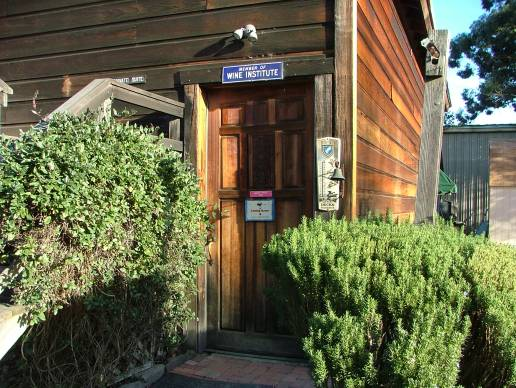

|
North America >
USA >
California >
Napa >
Prager Winery & Port Works
Prager Winery & Port Works

St. Helena, California
www.pragerport.com
Specializing in Ports, the Prager family makes a wide variety of these fortified wines. In addition they also produce several
varietal wines.
Tasting Fee: $10 (including souvenir glass).
Vintages:
Petite Sirah Napa Valley
2003
Sweet Claire Late Harvest Riesling California
2004
Aria Napa Valley White Port
2002
2003
2004
2005
Club Reserve Napa Valley Port
2005
Noble Companion Napa Valley Tawny Port (nonvintage bottling years)
2007
2008
2009
Tom�s Napa Valley Port
2004
2006
Royal Escort Napa Valley Port
2003
2004
2005
|